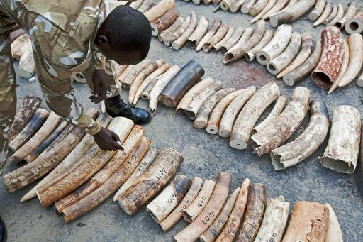
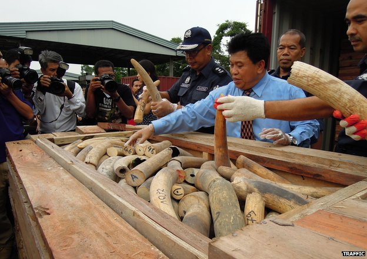
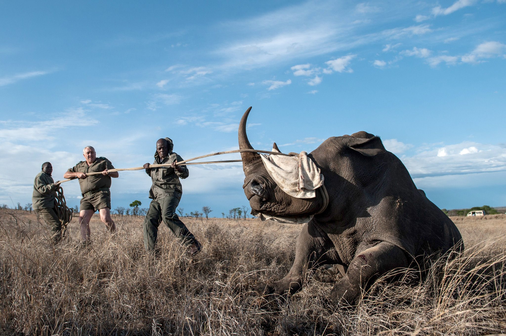

Africa's Poaching Crisis

Poaching is threatening wildlife conservation in Africa. Elephant (Loxodonta africana) and rhino (Ceratotherium simum and Diceros bicornis) populations have been devastated and the bush meat trade is severely impacting wildlife populations. Who is to blame? Will international funding of anti-poaching forces help to solve the problem? Poaching is a complex topic that cannot be solved by myopic, top-down enforcement approaches. Crime syndicates may be fuelling the poaching of elephant and rhino but they are not the source of the problem. Rather than treat the symptoms by spending millions on weapons and anti-poaching forces, which experience has repeatedly shown does not stop poaching, there is a need to understand the underlying causes of the poaching problem if it is to be solved.
Across Africa, state-led anti-poaching forces, no matter how well funded and equipped, have been unable to curtail the high levels of poaching currently observed. Devolving power and benefits to local communities will enable local communities to acquire full responsibility for anti-poaching operations, which they are much better positioned to do than external agencies who do not have the social networks and local knowledge needed to effectively perform oversight functions in the local area. As witnessed in the Luangwa Valley and Namibian conservancies, there is every likelihood that there will be a significant decline in poaching once community conservation is properly implemented.
Crime Syndicates

Crime syndicates may be fuelling the poaching of elephant and rhino but they are not the source of the problem. Rather than treat the symptoms by spending millions on weapons and anti-poaching forces, which experience has repeatedly shown does not stop poaching, there is a need to understand the underlying causes of the poaching problem if it is to be solved.
Kruger National Park in South Africa, which spends over $13.5 million annually on anti-poaching, has the most highly-trained and dedicated anti-poaching force in Africa, including dividing the park into 22 sections, each with its own section ranger and a team of field rangers, use of dog tracker packs, helicopter support, and the South African defense force to offer assistance. Yet with all this money spent and all the manpower effort, 504, 421 and 327 rhino were poached in Kruger in 2017, 2018 and 2019, respectively. Although the number of poached rhinos is going down each year, it is partly because there are fewer and fewer rhinos left to poach, with their numbers having declined exponentially in Kruger since 2011. This underscores our point that if all the money spent on the massive, highly coordinated anti-poaching effort in Kruger cannot prevent the poaching of rhino, how much more difficult will it be to save elephant and rhino populations in other African countries that do not have access to this sort of funding?
Evidences

Evidence of local communities’ displacement abound. For instance, the book Conservation and Mobile Indigenous Peoples: Displacement, Forced Settlement, and Sustainable Development provides many case studies, highlighting the devastating effects of displacement by PAs on peoples’ livelihoods through the ensuing loss of access to traditional resources and adaptive strategies, such as key forage resources for livestock in wetlands during drought years.